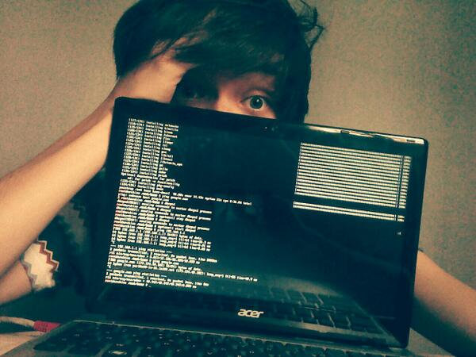
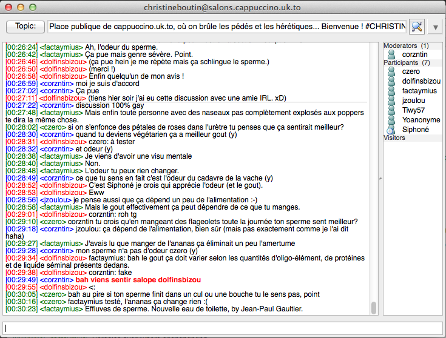

Si vous arrivez ici, c'est que cappuccino.uk.to est hors ligne. En l'occurrence, une coupure de courant est à l'origine de la panne, et comme corzntin ne peut intervenir physiquement pendant une semaine, il est probable que le serveur reste inutilisable toute la semaine. En attendant, vous pouvez venir sur le canal #cappuccino.uk.to du serveur IRC Freenode, la discussion du salon principal continue là bas et le support technique aussi. ;)
Signé Dolf, le ouèbemasteur.
P.S: Le salon furry est maintenu sur #furry.cappuccino.uk.to ! *purr purr purr*
Qu'est-ce que XMPP ?
XMPP est un protocole de messagerie instantanée ouvert, c'est-à-dire que, contrairement à Skype par exemple, tout le monde est libre de monter son propre serveur XMPP chez soi, et les serveurs peuvent se connecter entre eux. Les "adresses XMPP" sont de la forme nom-d'utilisateur@serveur, de façon à ce que vous puissiez communiquer en direct avec n'importe qui, même s'il utilise un autre serveur XMPP. Vous n'avez pas d'intérêt particulier à rejoindre ce serveur plutôt qu'un autre, mais faites attention à sa politique de confidentialité ainsi qu'à son chiffrement. Cappuccino.uk.to ne garde aucune trace de vos messages et de vos allers-retour, et votre connexion est chiffrée.
Cappuccino.uk.to a été conçu et est administré par corzntinUn jeune homme très sérieux ! . En cas de problème n'hésitez pas à lui demander conseil directement sur XMPP (corentin@corentin.uk.to) ou sur twitter (@corzntin) !
Inscription
Pour vous inscrire, vous devez télécharger un client XMPP, par exemple Gajim (Windows/Linux), ou Psi (Windows/Mac), et procéder à l'inscription depuis celui-ci.
Vous pouvez également vous inscrire via le formulaire web. Attention, ce formulaire est en phase de test. Il est à noter qu'un bug affiche une erreur 500 après l'inscription alors que le compte est bien enregistré.
Une fois inscrit, n'hésitez pas à venir déconner avec nous dans le salon principal !
Salons
Le serveur héberge également des salons de discussion XMPP. Ils sont accessibles à tous, membres du serveur ou d'un autre serveur XMPP, et tout le monde est libre d'en créer de nouveaux (il vous suffit d'en rejoindre un qui n'existe pas encore...) . N'hésitez pas à nous rejoindre sur le salon principal !
Si vous avez ouvert un chan qui mérite d'être indexé, n'hésitez pas à contacter dolfinsbizou (dolfinsbizou@cappuccino.uk.to) qui se fera un plaisir de l'ajouter à la liste.